<title>London Map Preview</title>
<meta name="description" content="A tap-to-load London map for the BlueStaffyUK London page: two placements measured against the city type-fit caps, three facade styles, the loaded state and the board entries to apply.">
<link rel="preconnect" href="https://fonts.googleapis.com">
<link rel="preconnect" href="https://fonts.gstatic.com" crossorigin>
<link href="https://fonts.googleapis.com/css2?family=Fraunces:opsz,wght@9..144,600;9..144,700&family=Source+Sans+3:ital,wght@0,400;0,600;0,700;1,400&display=swap" rel="stylesheet">
<style>
:root{
 --bone:#F4F1EA;--steel:#1F3A52;--brass:#C9A227;
 --bg:var(--bone);--card:#FFFFFF;--ink:#1B2430;--ink-2:#46566B;--rule:#DAD6CC;--head:var(--steel);
 --chip-bg:#EFE3B4;--chip-ink:#5A4708;--ok-bg:#E2EFE7;--ok-ink:#2F6B4F;--warn-bg:#F6E3DA;--warn-ink:#9A4A2A;
 --shot:#E4EAF1;--code:#FAF8F3;--btn:#1F3A52;--btn-ink:#F4F1EA;--ring:#1F3A52;
 --display:"Fraunces",Georgia,"Times New Roman",serif;
 --body:"Source Sans 3",system-ui,-apple-system,"Segoe UI",sans-serif;
 --mono:ui-monospace,"SF Mono",Menlo,monospace;
 color-scheme:light;
}
@media (prefers-color-scheme: dark){
 :root:not([data-theme="light"]){--bg:#10161D;--card:#18222D;--ink:#E8E4DA;--ink-2:#A9B4BF;--rule:#2C3946;--head:#CFDDEA;
  --chip-bg:#3A3216;--chip-ink:#F0D77A;--ok-bg:#16301F;--ok-ink:#8FD3AA;--warn-bg:#3A2017;--warn-ink:#F0B49A;
  --shot:#0C1117;--code:#121A22;--btn:#CFDDEA;--btn-ink:#10161D;--ring:#C9A227;color-scheme:dark}
}
:root[data-theme="dark"]{--bg:#10161D;--card:#18222D;--ink:#E8E4DA;--ink-2:#A9B4BF;--rule:#2C3946;--head:#CFDDEA;
 --chip-bg:#3A3216;--chip-ink:#F0D77A;--ok-bg:#16301F;--ok-ink:#8FD3AA;--warn-bg:#3A2017;--warn-ink:#F0B49A;
 --shot:#0C1117;--code:#121A22;--btn:#CFDDEA;--btn-ink:#10161D;--ring:#C9A227;color-scheme:dark}
*{box-sizing:border-box}
body{margin:0;background:var(--bg);color:var(--ink);font:17px/1.6 var(--body)}
main{max-width:1120px;margin:0 auto;padding:32px 16px 64px;display:grid;gap:20px;min-width:0}
h1,h2,h3{font-family:var(--display);color:var(--head);line-height:1.2;margin:0;text-wrap:balance}
h1{font-size:clamp(28px,5vw,40px)} h2{font-size:clamp(21px,3.4vw,26px)} h3{font-size:18px}
p,li{max-width:72ch;margin:0}
a{color:var(--head)}
.tag{display:inline-block;font-size:13px;font-weight:700;letter-spacing:.08em;text-transform:uppercase;color:var(--chip-ink);background:var(--chip-bg);padding:2px 8px;border-radius:3px}
.rec{color:var(--ok-ink);background:var(--ok-bg)}
.lede{color:var(--ink-2)}
.card{background:var(--card);border:1px solid var(--rule);border-radius:8px;padding:20px 16px;display:grid;gap:14px;min-width:0}
@media (min-width:640px){.card{padding:24px}}
.card-head{display:flex;flex-wrap:wrap;gap:10px;justify-content:space-between;align-items:baseline}
ul,ol{margin:0;padding-left:22px;display:grid;gap:6px}
code{font:14px var(--mono);background:var(--code);padding:0 4px;border-radius:3px;overflow-wrap:anywhere}
pre{margin:0;background:var(--code);border:1px solid var(--rule);border-radius:6px;padding:12px;overflow-x:auto;font:13px/1.5 var(--mono);white-space:pre}
button.copy{font:600 14px/1 var(--body);color:var(--btn-ink);background:var(--btn);border:0;border-radius:4px;min-height:36px;padding:8px 12px;cursor:pointer}
button.copy:focus-visible{outline:3px solid var(--ring);outline-offset:2px}
table{border-collapse:collapse;width:100%;font-size:15px;line-height:1.45;font-variant-numeric:tabular-nums}
th,td{text-align:left;vertical-align:top;padding:8px 10px;border-bottom:1px solid var(--rule)}
th{font-weight:700;color:var(--ink-2)}
.over{color:var(--warn-ink);font-weight:700}
@media (max-width:639px){
 table.stack thead{position:absolute;width:1px;height:1px;overflow:hidden;clip-path:inset(50%)}
 table.stack,table.stack tbody,table.stack tr,table.stack td{display:block;width:100%}
 table.stack tr{border:1px solid var(--rule);border-radius:6px;padding:6px 10px;margin-bottom:10px}
 table.stack td{border:0;padding:4px 0;display:grid;grid-template-columns:minmax(0,9.5em) minmax(0,1fr);gap:10px}
 table.stack td::before{content:attr(data-label);font-weight:700;color:var(--ink-2)}
}
.shots{display:grid;gap:16px;align-items:start;grid-template-columns:minmax(0,1fr)}
@media (min-width:760px){.shots{grid-template-columns:minmax(0,375fr) minmax(0,784fr)}}
figure{margin:0;display:grid;gap:6px;min-width:0}
figure img{display:block;width:100%;height:auto;border:1px solid var(--rule);border-radius:6px;background:var(--shot)}
figure.phone img{max-width:375px}
figcaption{font-size:14px;color:var(--ink-2)}
.wide{grid-column:1/-1}
.pair{display:grid;gap:16px;grid-template-columns:minmax(0,1fr)}
@media (min-width:640px){.pair{grid-template-columns:repeat(3,minmax(0,1fr))}}
.kv{display:grid;gap:4px 16px;grid-template-columns:minmax(0,1fr)}
@media (min-width:640px){.kv{grid-template-columns:minmax(0,12em) minmax(0,1fr)}}
.kv dt{font-weight:700;color:var(--ink-2)} .kv dd{margin:0}
</style>

<main>
<header class="card">
  <span class="tag">Preview · London · 2026-10-06</span>
  <h1>London Map Preview</h1>
  <p class="lede">A tap-to-load map of London for the London page. It has two placements, measured against the city type-fit caps per H3 answer, and three facade styles. Nothing in <code>src/</code>, <code>data/</code> or the boards has changed. Everything here was injected into a served copy of the built site.</p>
  <dl class="kv">
    <dt>Map target</dt><dd><code>data/locations.json</code> London row <code>city</code> → <code>London, UK</code>, zoom 10, <code>output=embed</code>. The city centre only: no street, postcode or coordinates.</dd>
    <dt>Before a tap</dt><dd>A panel drawn from tokens (inline SVG motif and a brass pin). <strong>0 requests to Google</strong> in all 36 measured scenarios.</dd>
    <dt>On a tap</dt><dd>An iframe in the same box, titled <q>London — delivery from BlueStaffyUK in Carlisle</q>, with <code>loading="lazy"</code> and <code>referrerpolicy="no-referrer-when-downgrade"</code>. Focus moves into the map.</dd>
    <dt>Caption</dt><dd><q>We deliver from Carlisle for £200–£350, priced by distance, by DEFRA-approved transport, or you collect your puppy from us in Carlisle.</q> This is built from <code>data/settings.json</code>. It gives no drive time and no mileage.</dd>
    <dt>Note</dt><dd><q>Nothing loads from Google until you tap. Showing the map loads Google Maps, which sets its own cookies.</q></dd>
  </dl>
</header>

<section class="card" aria-labelledby="rec">
  <div class="card-head"><h2 id="rec">Recommendation</h2><span class="tag rec">Recommended · P1 + S1</span></div>
  <p><strong>P1 (the delivery chapter, answer 3) with S1 (steel panel, brass pin).</strong> The map sits straight after the sentence it illustrates (<q>We deliver across London, from Enfield in the north to Sutton in the south.</q>), in the chapter whose subject is delivery, so the delivery caption is on topic. S1 reserves the map's box, so a tap moves nothing: the answer is 1,199px at 1280 before and after the tap, against a 1,280px cap.</p>
  <p><strong>Trade-off:</strong> S1 is the heaviest facade. It adds 418px to the 1280 answer (781 → 1,199). The 81px left is about three more lines of copy in that answer before the gate fails at 1280.</p>
  <ul>
    <li>P2 has the same headroom, but the map reads there as a parks map, which it is not (a zoom-10 city centre). The delivery caption is off topic in the parks answer, and the map pushes the places list, that answer's real content, about 400px down.</li>
    <li>S3 is the lightest facade (+188px at 1280), but it grows 268px on a tap and ends with 43px headroom. S2 works too, but its bone card repeats the bone close card that holds the chapter's CTA pill, on the same steel-100 tray.</li>
  </ul>
</section>

<section class="card" aria-labelledby="place">
  <h2 id="place">The two placements</h2>
  <ol>
    <li><strong>P1, the delivery chapter</strong> (<q>How Will My Blue Staffy Puppy Get From Carlisle to London?</q>), answer 3 (<q>Which Way Does My Staffordshire Puppy Travel to London?</q>). It goes after the answer's opening paragraph and before <q>Puppies from Lisa Bright have gone to…</q>. In the source it is the first child of the <code>ch-3</code> slot, in the text column.</li>
    <li><strong>P2, the London-life chapter</strong>, answer 1 (<q>How Do Staffies in London Cope With Stairs, Lifts and Neighbours in a Flat?</q>). It goes in the full-width slot, under the parks H4 and its paragraph, and before the places list.</li>
  </ol>
  <h3>Height of the H3 answer that holds the map (px)</h3>
  <p class="lede">The gate is <code>tests/render/lib/cityTypeFit.ts</code>, run unchanged. Caps: 2.5 viewports below 768 (2,030 at 375×812) and 1.6 from 1280 (1,280 at 1280×800). There is no height cap from 768 to 1279, so the 768 rows are reported only.</p>
  <table class="stack">
    <thead><tr><th>Width</th><th>Answer</th><th>Before</th><th>S1 / S2 (facade = loaded)</th><th>S3 facade</th><th>S3 loaded</th><th>Cap</th><th>Least headroom</th></tr></thead>
    <tbody>
      <tr><td data-label="Width">375</td><td data-label="Answer">P1 delivery 3</td><td data-label="Before">1,324</td><td data-label="S1 / S2">1,697</td><td data-label="S3 facade">1,526</td><td data-label="S3 loaded">1,767</td><td data-label="Cap">2,030</td><td data-label="Least headroom">263</td></tr>
      <tr><td data-label="Width">375</td><td data-label="Answer">P2 London-life 1</td><td data-label="Before">1,030</td><td data-label="S1 / S2">1,399</td><td data-label="S3 facade">1,228</td><td data-label="S3 loaded">1,469</td><td data-label="Cap">2,030</td><td data-label="Least headroom">561</td></tr>
      <tr><td data-label="Width">768</td><td data-label="Answer">P1 delivery 3</td><td data-label="Before">744</td><td data-label="S1 / S2">1,161</td><td data-label="S3 facade">931</td><td data-label="S3 loaded">1,199</td><td data-label="Cap">none</td><td data-label="Least headroom">–</td></tr>
      <tr><td data-label="Width">768</td><td data-label="Answer">P2 London-life 1</td><td data-label="Before">742</td><td data-label="S1 / S2">1,156</td><td data-label="S3 facade">926</td><td data-label="S3 loaded">1,194</td><td data-label="Cap">none</td><td data-label="Least headroom">–</td></tr>
      <tr><td data-label="Width">1280</td><td data-label="Answer">P1 delivery 3</td><td data-label="Before">781</td><td data-label="S1 / S2">1,199</td><td data-label="S3 facade">969</td><td data-label="S3 loaded">1,237</td><td data-label="Cap">1,280</td><td data-label="Least headroom">81 (S1/S2) · 43 (S3)</td></tr>
      <tr><td data-label="Width">1280</td><td data-label="Answer">P2 London-life 1</td><td data-label="Before">788</td><td data-label="S1 / S2">1,201</td><td data-label="S3 facade">971</td><td data-label="S3 loaded">1,239</td><td data-label="Cap">1,280</td><td data-label="Least headroom">79 (S1/S2) · 41 (S3)</td></tr>
    </tbody>
  </table>
  <p><strong>0 defects before the map. 0 new defects in all 36 scenarios</strong> (2 placements × 3 styles × facade and loaded × 3 widths), and every other answer kept its height. Examined nodes rose by 2 at each width (the caption and the note): 316 → 318, 267 → 269 and 313 → 315.</p>
  <p>The first run used a 360px stage. There the P1 answer at 1280 was 1,259 (21px left), and S3 loaded was <span class="over">1,337, 57px over the cap</span>. The stage is now held to 300px, and S3's live map to 260px.</p>
</section>

<section class="card" aria-labelledby="s1">
  <div class="card-head"><h2 id="s1">S1 · Steel panel, brass pin</h2><span class="tag rec">Recommended</span></div>
  <p class="lede">The panel is steel-700 with abstract contour rings and a soft river band in steel-500, and a brass pin. The word London is in Fraunces bone, above the brass CTA pill.</p>
  <div class="shots">
    <figure class="phone">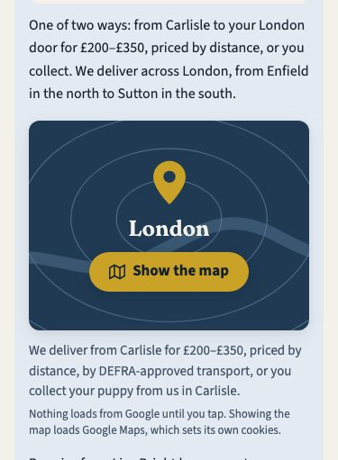<figcaption>375 · P1</figcaption></figure>
    <figure>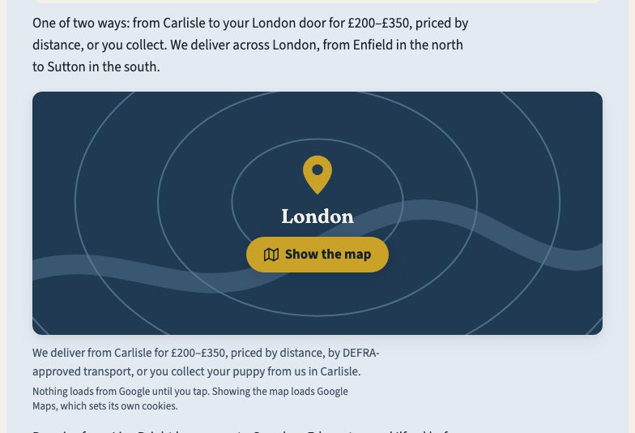<figcaption>1280 · P1</figcaption></figure>
    <figure class="wide">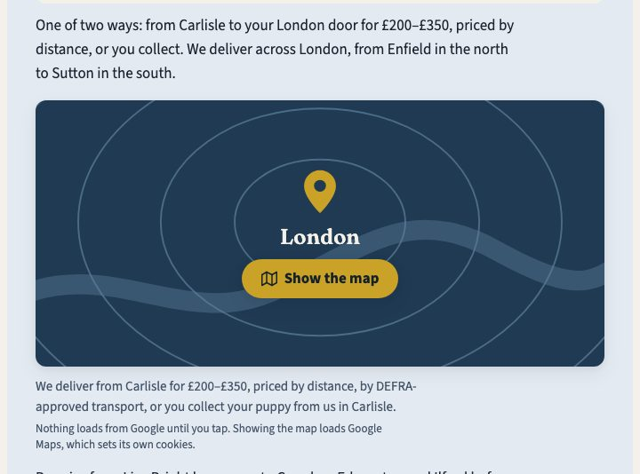<figcaption>768 · P1</figcaption></figure>
  </div>
</section>

<section class="card" aria-labelledby="s2">
  <h2 id="s2">S2 · Bone card, steel line-map motif</h2>
  <p class="lede">A bone-50 card with the card border and shadow, a street-grid, ring-road and river motif in steel-300 hairlines, a brass pin with a steel outline, and London in brand steel.</p>
  <div class="shots">
    <figure class="phone">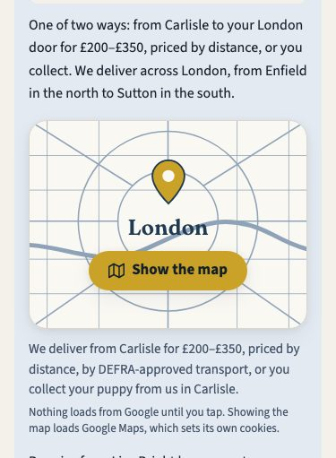<figcaption>375 · P1</figcaption></figure>
    <figure>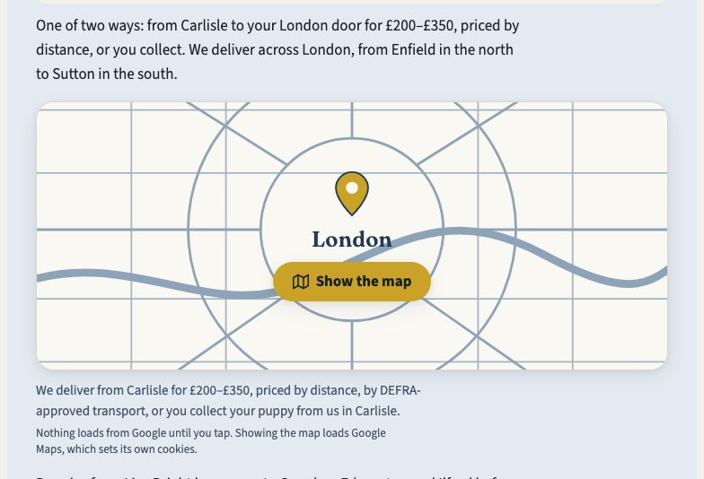<figcaption>1280 · P1</figcaption></figure>
    <figure class="wide">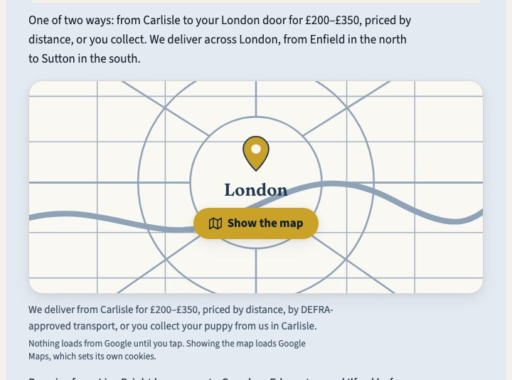<figcaption>768 · P1</figcaption></figure>
  </div>
</section>

<section class="card" aria-labelledby="s3">
  <h2 id="s3">S3 · Compact strip</h2>
  <p class="lede">One row: a pin in a brass-200 disc, <q>London</q> over <q>on Google Maps</q>, and the button. Below a 400px box the disc and gaps tighten and the button drops its icon. Without that, the label broke onto four lines at 375. The map box only appears on a tap (+268px at 1280).</p>
  <div class="shots">
    <figure class="phone">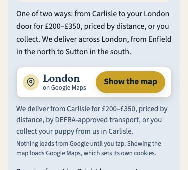<figcaption>375 · P1</figcaption></figure>
    <figure>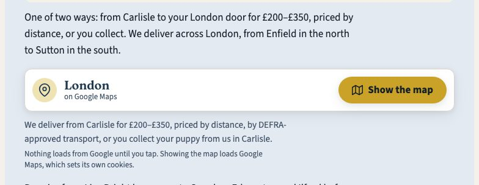<figcaption>1280 · P1</figcaption></figure>
    <figure class="wide">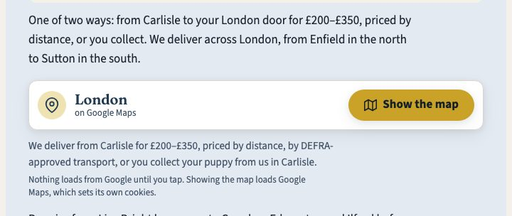<figcaption>768 · P1</figcaption></figure>
  </div>
</section>

<section class="card" aria-labelledby="loaded">
  <h2 id="loaded">After the tap: the real map (S1, P1)</h2>
  <p class="lede">This was loaded once on this machine for the preview. The iframe fills the panel's box: 233px at 375 and 300px at 1280, with nothing below moving. It received focus after the tap.</p>
  <div class="shots">
    <figure class="phone">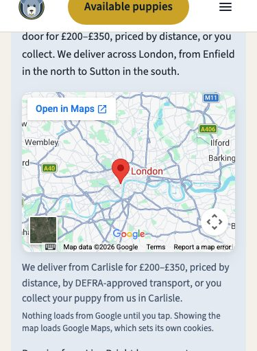<figcaption>375 · loaded</figcaption></figure>
    <figure>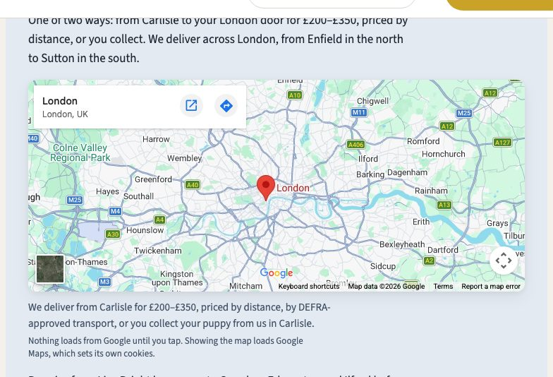<figcaption>1280 · loaded</figcaption></figure>
  </div>
  <table class="stack">
    <thead><tr><th>Width</th><th>Requests before tap</th><th>Requests after tap</th><th>Transferred after tap</th><th>Hosts</th></tr></thead>
    <tbody>
      <tr><td data-label="Width">375</td><td data-label="Before tap">0</td><td data-label="After tap">32</td><td data-label="Transferred">~637 KB</td><td data-label="Hosts">maps.google.com, www.google.com, maps.googleapis.com, maps.gstatic.com, fonts.googleapis.com, fonts.gstatic.com</td></tr>
      <tr><td data-label="Width">1280</td><td data-label="Before tap">0</td><td data-label="After tap">44</td><td data-label="Transferred">~895 KB</td><td data-label="Hosts">the same six, plus places.googleapis.com</td></tr>
    </tbody>
  </table>
</section>

<section class="card" aria-labelledby="ctx">
  <h2 id="ctx">The whole answer, and P2 for comparison</h2>
  <div class="shots">
    <figure class="phone">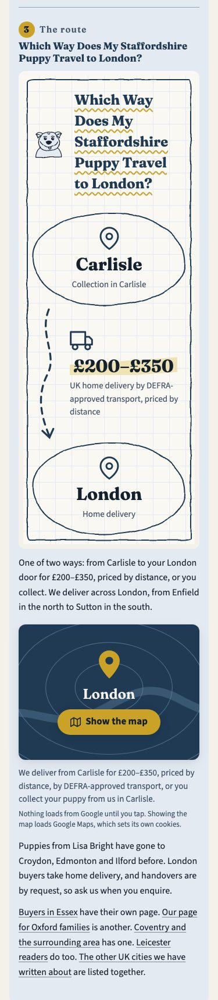<figcaption>P1 answer 3 at 375: 1,697 of 2,030px</figcaption></figure>
    <figure>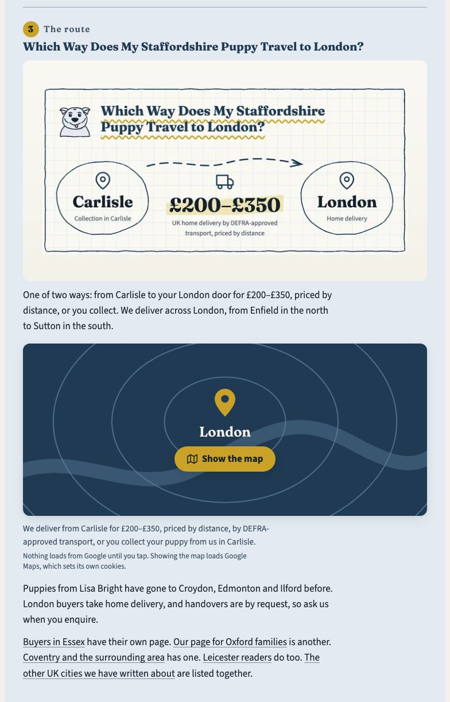<figcaption>P1 answer 3 at 1280: 1,199 of 1,280px</figcaption></figure>
  </div>
  <div class="shots">
    <figure class="phone">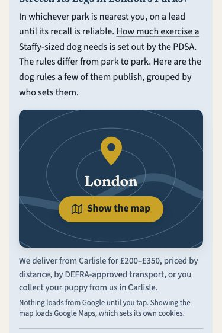<figcaption>P2 at 375</figcaption></figure>
    <figure>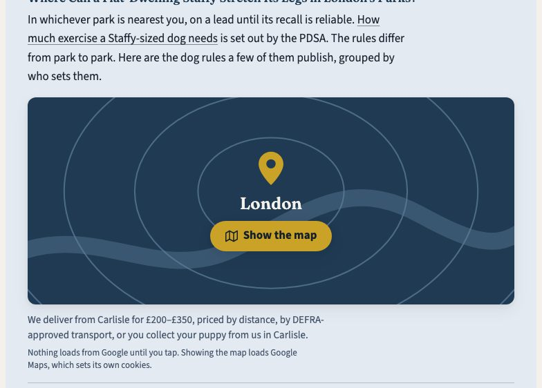<figcaption>P2 at 1280</figcaption></figure>
  </div>
</section>

<section class="card" aria-labelledby="focus">
  <h2 id="focus">Keyboard focus</h2>
  <p class="lede">Reached with Tab. The button is a real <code>&lt;button&gt;</code>, 177×44 at every width in S1 and S2, and 139×44 in S3 at 375. The ring is brass on the steel panel (<code>--color-focus-on-inverse</code>) and steel on the light ones (<code>--color-focus</code>).</p>
  <div class="pair">
    <figure>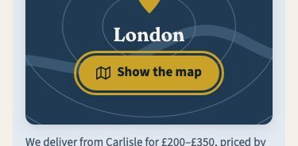<figcaption>S1</figcaption></figure>
    <figure>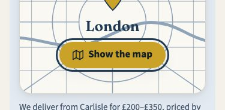<figcaption>S2</figcaption></figure>
    <figure>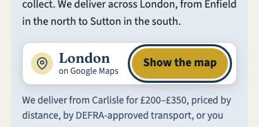<figcaption>S3</figcaption></figure>
  </div>
</section>

<section class="card" aria-labelledby="board">
  <div class="card-head"><h2 id="board">Board entries to apply after approval</h2></div>
  <p>These were checked in memory against <code>pageboard.validate_board</code> (the real London board, with a scratch copy of the link library carrying the new row): <strong>OK</strong>. The schema refuses extra keys on a link row, takes a one-letter <code>style.pick</code> (S1 = A) and a <code>source</code> of the form <code>answer board YYYY-MM-DD-&lt;batch&gt; qNN</code>. The exact markup and CSS are in <code>diffs.md</code>.</p>
  <ol>
    <li><strong>External link library</strong> (<code>docs/reference/external-link-library.md</code>): one row for the embed URL, source type <code>other</code>.</li>
    <li><strong><code>sections[delivery].links.external[]</code></strong> (rule 12): target URL, anchor = the iframe title, purpose, and resolves today (301 → 200, 2026-10-06).</li>
    <li><strong><code>subcomponents[]</code></strong>: <code>london-map</code> on node <code>tree[2]</code> of <code>delivery</code>, placement, style pick, data sources, and its one link.</li>
    <li><strong><code>board_revisions[]</code></strong>: the 41st row, then <code>board_approve.py</code> and <code>board_gate.py</code>.</li>
    <li><strong>New kit component</strong>: <code>src/components/kit/CityMapFacade.astro</code>, listed in <code>data/design/components.json</code> as C20 <code>city-map-facade</code> (London only, so the own-components gate is untouched).</li>
  </ol>
  <div class="card-head"><h3>The external link row</h3><button class="copy" type="button" data-copy="row-link">Copy</button></div>
<pre id="row-link">{
  "href": "https://maps.google.com/maps?q=London%2C%20UK&amp;z=10&amp;hl=en&amp;t=m&amp;output=embed&amp;iwloc=near",
  "anchor": "London — delivery from BlueStaffyUK in Carlisle",
  "anchor_type": "branded",
  "library_row": "https://maps.google.com/maps?q=London%2C%20UK&amp;z=10&amp;hl=en&amp;t=m&amp;output=embed&amp;iwloc=near",
  "why": "EMBED, not a body link. The London map (subcomponent london-map): an iframe whose title is the anchor, loaded only when the reader taps 'Show the map' (no request to Google before the tap). Purpose: shows where the buyer is (London city centre, zoom 10, from data/locations.json city); never implies BlueStaffyUK is in London. No route, mileage or drive time. Resolves today: yes (301 to www.google.com/maps/embed, then 200, 2026-10-06)."
}</pre>
  <div class="card-head"><h3>The subcomponent</h3><button class="copy" type="button" data-copy="row-sub">Copy</button></div>
<pre id="row-sub">{
  "id": "london-map",
  "section": "delivery",
  "node": "tree[2]",
  "heading": "Which Way Does My Staffordshire Puppy Travel to London?",
  "name": "London map (tap to load)",
  "placement": "in answer 3, after its opening paragraph and before the past-deliveries paragraph, at the text column's width",
  "style": { "pick": "A", "name": "S1 · Steel panel, brass pin", "preview": "docs/reports/london-map-preview-2026-10-06/index.html" },
  "source": "answer board 2026-10-0X-london-map q01",
  "data": [
    "data/locations.json row blue-staffy-puppies-london `city` (the map query 'London, UK', zoom 10)",
    "data/settings.json address.city, delivery_min_gbp, delivery_max_gbp (the caption, via src/lib/cityKit.ts TOWN and DELIVERY_BAND)"
  ],
  "condition": "the facade always renders; the iframe exists only after a tap. No Static Maps image, no street, postcode or coordinates, no route line, no drive time or mileage.",
  "links": ["https://maps.google.com/maps?q=London%2C%20UK&amp;z=10&amp;hl=en&amp;t=m&amp;output=embed&amp;iwloc=near"]
}</pre>
</section>

<section class="card" aria-labelledby="trade">
  <h2 id="trade">Lighthouse, cookies and what loads when</h2>
  <ul>
    <li><strong>Nothing loads until the tap.</strong> The facade is inline SVG and tokens, with no Static Maps image, so the page makes no request to Google, runs no Google script and receives no Google cookie at load. In all 36 scenarios the request log showed 0 requests to any host but the page's own.</li>
    <li><strong>Lighthouse never taps</strong>, so its lab run sees only the panel. There is no third-party script, no third-party cookie and nothing for Best Practices to flag. The cost of an embed (Known Issue 38, as with the video) falls only on a reader who asks for the map, and that reader is told about it first.</li>
    <li><strong>After the tap</strong>, Google's embed brings 32–44 requests (~0.6–0.9 MB) from six or seven Google hosts. This headless browser recorded no cookies because it blocks third-party cookies by default. A browser that allows them will receive Google's, which is why the note names them.</li>
    <li><code>public/_headers</code> sets <code>Permissions-Policy: geolocation=()</code>, so the map's "your location" control cannot prompt. No CSP <code>frame-src</code> blocks the frame.</li>
  </ul>
  <h3>Flags</h3>
  <ul>
    <li>Google's own info card in the loaded map (<code>iwloc=near</code>) shows a directions icon at desktop width. We draw no route, but Google offers one. Dropping <code>iwloc</code> would depart from the skill's template.</li>
    <li>The board schema has no embed field, so the map goes on as an external link of type <code>other</code>. On the dry run that took the page from 14 to 15 external links and from 11 to 12 domains (<code>google.com</code>), with the source types unchanged.</li>
  </ul>
</section>
</main>
<script>
document.querySelectorAll('button.copy').forEach(function (b) {
  b.addEventListener('click', function () {
    var el = document.getElementById(b.dataset.copy);
    var text = el ? el.textContent : '';
    var done = function () { var t = b.textContent; b.textContent = 'Copied'; setTimeout(function () { b.textContent = t; }, 1400); };
    try { navigator.clipboard.writeText(text).then(done, done); } catch (e) { done(); }
  });
});
</script>
